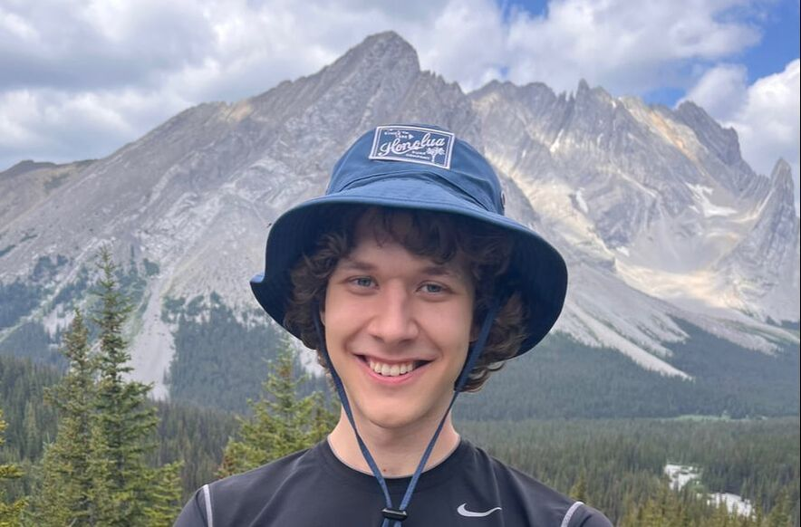

Lab Members
TB
Principal Investigator
Tyler Bonnell
DP
MSc
Drayton Pratt
Developing a better understanding of how slime molds learn.
JP
MSc
Justin Petluk
Evolution and development of reinforcement learning algorithms in changing environments.
SM
MSc
Stephen MacKenzie
Agent-based modelling of beluga social-spatial behaviour in the St. Lawrence Estuary.
VN
MSc
Vu Nam Nguyen
Comparing the use of model-free and model-based reinforcement learning algorithms in multi-agent settings.
JM
MSc
Justin Ma
Social dynamics of reinforcement learning agents in multi-agent settings.
AS
Undergraduate
Angie Shin
The use of social facilitation and local enhancement for reinforcement learning agents.
AJ
Undergraduate
Ananya Jain
Testing task generalization of reinforcement learning agents.
KB
Undergraduate · PURE award
Kya Broderick
Skill diversification and chaining in hierarchical reinforcement learning algorithms.
HP
Undergraduate
Harsh Patil
Use of deep learning models to estimate changes in the uncertainty of movement patterns.
JG
Undergraduate · USRA award
Jasman Gill
Learning to navigate visually complex worlds with DRL.
Lab Alumni

Undergraduate HonoursFinn Vamosi
Recruitment
We are currently looking for graduate students!
PhD — Development and evolution of social structures in primates
If you are an undergraduate at the University of Calgary and would like to chat, feel free to reach out! We often have projects in Data Science, AI, Animal Behaviour, or Ecology that need a helping hand. There are also paid summer opportunities: PURE and USRA awards.